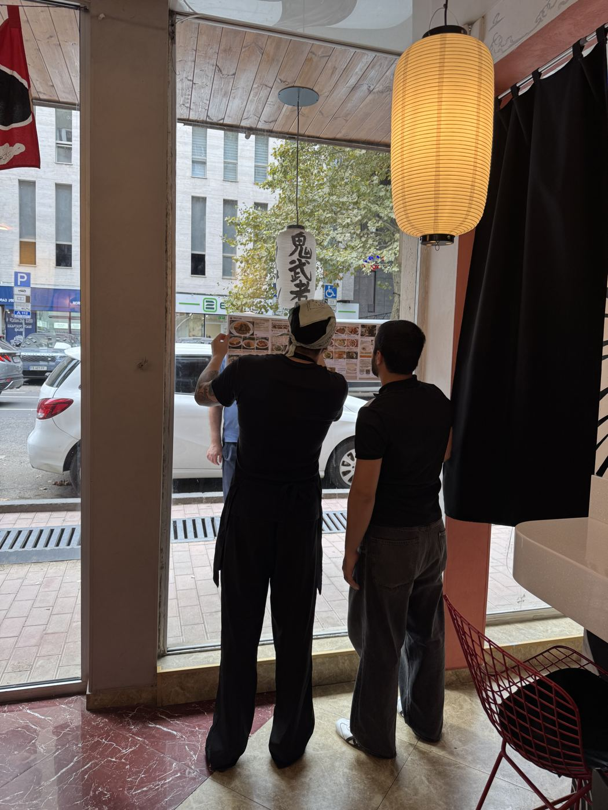

ジョージアでの会社設立・口座開設・在留手続きを、トビリシ在住の日本人が代行します。
私たちは2026年にトビリシで法人を設立し、日本食レストランを運営しています。自分たちが実際に通った手続きを、そのままご案内します。
初回相談30分無料 ／ 日本語対応 ／ 日本からのリモート対応可
こんな方のためのサービスです

ジョージア・ノマド留学
トビリシで営業中のお店を教室にして、1ヶ月でノマドの稼ぎ方と、現地で暮らす手続きを学ぶプログラムです。会社経営・投資・不動産・会計・プログラミング・観光・英会話・貿易・教育・農業から選べます。
くわしく見るくわしい料金
現地同行は窓口への付き添いと通訳、リモート代行は日本にいながら手続きを進めるプランです。
| サービス | 現地同行 | リモート代行 |
|---|---|---|
| 個人銀行口座の開設 | 1行 30,000円 お申し込み → | 120,000円〜 お申し込み → |
| 法人（LLC）設立と法人口座の開設 | 120,000円〜 お申し込み → | 200,000円〜 お申し込み → |
| 個人事業主（IE）登録と税務登録 | 50,000円〜 お申し込み → | 100,000円〜 |
| 在留許可と就労許可の申請 | 100,000円〜 お申し込み → | 150,000円〜 |
| ノマド・リモートワーカーの滞在相談 | 20,000円〜 | 30,000円〜 |
| 証券口座の開設（書類手続きのみ） | 30,000円〜 | 50,000円〜 |
| 住まい探し（内見同行と契約時の通訳） | 50,000円〜 お申し込み → | オンライン内見 20,000円〜 |
| 移住フルパック（上記を一括） | 400,000円〜 お申し込み → | |
税込表示。「お申し込み」からクレジットカードでお支払いいただけます。内容が標準と異なる場合は、無料相談でお見積りの上、別途ご請求します。登記費用・公証・翻訳・銀行手数料などの現地実費は別途、お見積り時に明示します。
設立後の月額サポート
ジョージアの法人や個人事業主は、売上がない月も毎月の税務申告が必要です。提携する現地の会計士と組み、日本語でまとめて対応します。
| プラン | 月額 |
|---|---|
| 法人の月次申告・会計サポート 歳入庁（RS.ge）への毎月の申告、帳簿、日本語でのご報告 | 40,000円〜 |
| 個人事業主の申告サポート 毎月の申告と年間の売上管理、日本語でのご報告 | 15,000円〜 |
| 在留・就労許可の更新サポート 更新時期の管理と書類準備、窓口対応 | 10,000円〜 |
申告業務は提携する現地の会計士が行います。日本の税務に関するご相談は、日本の税理士をご紹介します。
30秒で費用の目安をチェック
必要な手続きを選ぶと、料金の目安が出ます。迷ったら、わかる範囲だけ選んでください。
「〜」からの料金です。正式な金額は、無料相談でご状況を伺ってからお見積りします。
私たちの手続き記録
ご案内する手続きは、すべて自分たちで経験したものです。
- 2026年9月7日トビリシの日本食レストラン「Japan Food Hub」でオムライス店を開店
- 2026年9月10日OMURICELAND LLCの登記が完了（登記番号 422961726）
- 2026年9月TBC Bankで法人口座、Bank of Georgiaで個人口座、現地証券口座を開設
- 2026年10月2026年施行の新制度で、就労許可の申請を進行中
2026年の制度変更について
2026年3月から、ジョージアで働く・事業を行う外国人には就労許可が必要になりました。在留許可や個人事業主登録だけでは働くことができません。一方で、4月の改正により、日本の会社や顧客のためにリモートで働く場合は許可が不要になるケースもあります。ネット上には制度変更前の情報も多く残っているため、ご相談時に最新の条件をご案内します。
ご依頼の流れ
- 1 無料相談LINEかWhatsAppで、状況とご希望を伺います（30分）。
- 2 お見積り必要な手続き・期間・総額を書面でお出しします。
- 3 お申し込み内容にご納得いただいてからのお支払いです。
- 4 書類準備と手続き日本での公証・アポスティーユから現地の窓口まで対応します。
- 5 完了後のフォロー更新手続きや生活の困りごとにも対応します。
各サービスでやること
料金に含まれる作業の中身です。
よくある質問
料金はいくらですか？
無料相談は0円、オンライン個別相談（60分）は5,000円、銀行口座の開設サポートは1行30,000円、お試し移住1ヶ月（部屋・送迎・口座・SIM込み）は348,000円、会社設立から住まいまでの移住まるごとパックは400,000円から、生活サポート会員は月9,800円です。
どのサービスを選べばいいですか？
迷っている方は、まず無料相談（30分）をおすすめします。試しに住んでみたい方やノマドワーカーは「お試し移住1ヶ月」、口座だけ欲しい方は「口座開設サポート」、会社を作って住みたい方は「移住まるごとパック」が合っています。
日本人はジョージアにビザなしで何日いられますか？
日本のパスポートなら、観光目的でビザなしで最長1年滞在できます。働く場合は2026年からの就労許可の制度を確認してください（就労許可のガイド）。
ノマドワーカーでも使えますか？
使えます。1ヶ月の「お試し移住」は、部屋・空港の出迎え・口座・SIMが込みなので、着いた日から仕事を始められます。
飛行機代は料金に入っていますか？
入っていません。航空券はご自身で手配していただきます。部屋・送迎・現地での案内は「お試し移住1ヶ月」に含まれます。
日本にいながら手続きできますか？
法人設立や一部の口座開設は、日本で公証・アポスティーユを取った委任状を使い、リモートで進められます。銀行の審査により来訪が必要な場合は、事前にお伝えします。
ジョージア語や英語ができなくても大丈夫ですか？
大丈夫です。窓口でのやりとりや書類の内容は、日本語でご説明します。
費用はいつ支払いますか？
お見積りにご納得いただき、お申し込みが決まった時点でお支払いいただきます。無料相談だけで終わっても費用はかかりません。
銀行口座の開設を断られることはありますか？
あります。審査は銀行が行うため、必ず開設できるとはお約束できません。開設できなかった場合の扱いは、お申し込み前に書面でご案内します。
投資の相談もできますか？
証券口座は書類手続きのサポートのみで、投資の勧誘や助言は行っていません。
運営者
保谷硝子（現HOYA）創業者の一人・山中茂の孫。東京大学経済学部を総代で卒業し、コロンビア大学大学院で金融工学の修士号を取得。現在はトビリシを拠点に、農業・病院・学校などの事業を展開。
2010年から北海道・仙台・東京で飲食店を経営。2000年からシステムエンジニアとしても活動。2026年にトビリシで法人を設立し、オムライス店を開業。手続きの窓口担当です。
トビリシという街
日本のパスポートならビザなしで最長1年滞在でき、条件を満たす個人事業主は売上の1%課税というシンプルな税制があります。旧市街と新市街が近く、8000年続くワイン文化と食事の楽しさも、この街に住む理由のひとつです。
2026年1月から、入国時に旅行医療保険への加入が必要です。
トビリシのオムライス店（Japan Food Hub内）
運営者がトビリシで営業している、日本の洋食オムライスのお店です。トビリシにお越しの際は、ぜひお立ち寄りください。移住や起業のご相談も、お店でお気軽にどうぞ。
| 場所 | Japan Food Hub（1 Davit Gamrekeli St, Saburtalo, Tbilisi） |
| 営業時間 | 毎日 13:00〜22:00 |
| @omeletland.tbilisi |
noteの最新記事
トビリシでの手続きや暮らしの話を、noteでくわしく書いています。


まずは30分の無料相談から
検討中の段階でもかまいません。ご状況を伺い、必要な手続きと費用の目安をお伝えします。
特定商取引法に基づく表記
| 販売事業者 | 株式会社オムライスランド |
|---|---|
| 代表者 | 三上 あさみ |
| 運営責任者 | 三上 恭平 |
| 所在地 | 東京都練馬区東大泉6-34-28 大泉凌雲閣マンションB101 |
| 電話番号 | ご請求があった場合、遅滞なく開示します |
| メールアドレス | ご請求があった場合、遅滞なく開示します（お問い合わせはLINE・WhatsAppから受け付けています） |
| 販売価格 | サービスと料金の欄、およびお見積書に記載の金額（税込） |
| 商品代金以外の必要料金 | 登記費用・公証・翻訳・銀行手数料などの現地実費。お見積書に明示します |
| 支払方法 | クレジットカード（Stripe）、銀行振込 |
| 支払時期 | お見積りにご同意いただき、お申し込みが決まった時点 |
| 役務の提供時期 | お支払い確認後、お見積書に記載の日程で着手します |
| キャンセル・返金 | 着手前のキャンセルは全額返金します。着手後は、完了した作業分と発生済みの実費を差し引いて返金します。銀行の審査など当社の責任によらない結果については、お申し込み前に書面で取り扱いをご案内します |